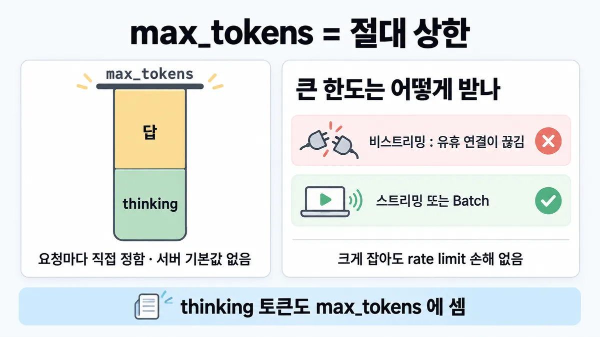
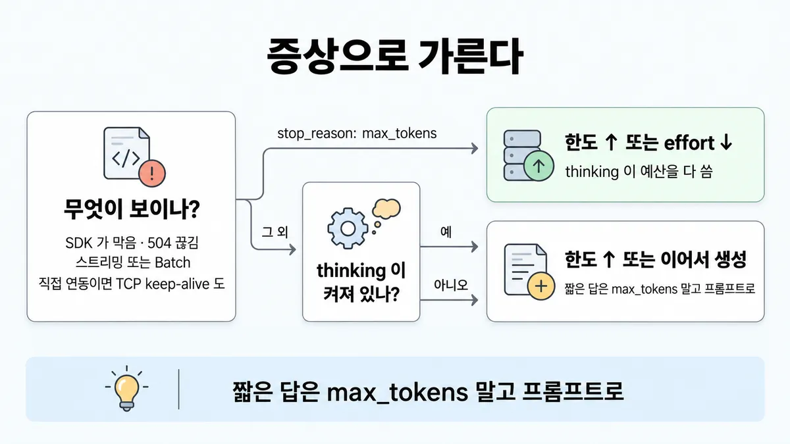

■ max_tokens 와 긴 출력
표시가 없는 문장은 공식 문서에서 확인한 내용이에요. 다른 표시는 읽는 법
왜 배우나 — 시험이 요구하는 것
시험 목표 4.5 토큰·지연·비용 최적화 · D4 평가 16%Optimize token usage, latency, and cost-performance trade-offs
이 개념으로 푸는 판단 (할 수 있어야 하는 것)
- 4.5③ 긴 출력 요청이 SDK 에서 막힌다 / 답이 중간에 잘린다 — max_tokens 설정과 스트리밍·배치 전환
- 3.3① 상담원이 "답 초안이 늦게 뜬다"고 한다 — 모델부터 바꾸나? — 지연 손잡이 고르기 (스트리밍 · 캐싱 · 출력 길이 · effort · 모델 교체)
- 1.2② 앱은 다음 단계를 무엇으로 아나? — 처리 루프를 무엇으로 제어하나 (stop_reason)
한눈에
max_tokens = 멈추기 전에 생성할 최대 토큰 수(절대 상한). 모델은 그 전에 멈출 수 있음. 요청마다 직접 정함 — API 레퍼런스에 optional 표시 없음(= 필수), 서버 기본값 없음
thinking(사고) 토큰도 여기에 셈 → 한도 = thinking + 답 전체
크게 잡는 것 자체는 rate limit(속도 제한) 손해 없음(OTPM 은 실제 생성 토큰만 셈). 문제는 긴 비스트리밍 요청의 연결 끊김 → 스트리밍 또는 Batch
비유 로드밸런서 idle timeout. 오래 걸리는 응답을 한 번에 받으려 하면 중간 장비가 조용히 끊음 → 청크로 흘려 받거나(스트리밍) 비동기 잡으로 맡기고 결과를 가지러 감(Batch)


ELI5
편지지를 몇 장 줄지 정하는 거예요.
- 장수를 너무 적게 주면 편지가 중간에 끊겨요.
- 생각을 적는 메모도 같은 편지지를 써서, 메모가 길면 본문 쓸 자리가 없어요.
- 아주 긴 편지는 우체부가 문 앞에서 오래 못 기다려요. 조금씩 받거나, 나중에 찾으러 가야 해요.
- 이 쪽은 "언제 장수를 늘리고, 언제 받는 방법을 바꾸나"를 모아 둔 곳이에요.
개념 설명
원리
상한이지 목표가 아님
max_tokens는 "여기까지만"이라는 절대 상한. 모델은 할 말이 끝나면 먼저 멈춤.- thinking(사고) 토큰과 답 텍스트가 한 예산을 같이 씀. thinking 이 길면 답이 못 나옴.
- 상한을 크게 잡는 것 자체는 rate limit(속도 제한)에 손해가 없음 (OTPM 은 실제 생성 토큰만 셈).
긴 요청은 받는 방법이 문제
- 오래 걸리는 비스트리밍 요청은 중간 네트워크가 유휴 연결로 보고 끊을 수 있음.
- 그래서 SDK 는 10분을 넘을 것 같은 비스트리밍 요청을 보내기 전에 막음.
- 스트리밍 = 연결을 계속 살려 둠. Batch = 연결을 끊고 나중에 결과를 가지러 감.
잘림은 오류가 아님
- 한도에 닿으면 HTTP 200 +
stop_reason: "max_tokens". 앱이 이 값을 봐야 잘린 걸 알 수 있음. - 처리 : 한도 올리기 · 이어서 생성 · 불완전하다는 안내 붙이기. 구조화 출력은 잘리면 스키마가 깨질 수 있음.
핵심 질문 두 개
- 이 요청의 전체 출력(thinking + 답)이 한도 안에 들어가나?
- 다 만드는 데 오래 걸리면, 연결을 살려 둘 건가(스트리밍) 나중에 가지러 갈 건가(Batch)?
규칙과 판단


갈림길
②③ 증상으로 [4.5③]
스트리밍 또는 Batch
SDK 는 비스트리밍 요청이 10분 타임아웃을 넘을 것으로 예상되면 막음. 이벤트 처리가 필요 없으면 .stream() + .get_final_message() 로 완전한 Message
스트리밍 · Batch · keep-alive
일부 네트워크는 유휴 연결을 끊음 · Batch 는 결과를 폴링하니 끊기지 않는 연결이 필요 없음
stop_reason: "max_tokens"
한도 ↑ 또는 effort ↓
thinking 토큰도 max_tokens 에 셈 → 긴 thinking 이 답 전에 예산을 다 씀
한도 ↑ 또는 이어서 생성
잘린 답엔 불완전하다는 안내를 붙임. 구조화 출력이면 스키마가 안 맞을 수 있음 → 더 높은 max_tokens 로 재시도
④⑤ 얼마로 잡나 [4.5③] [2.1②]
크게 · Opus 5·4.8·4.7 은 64k 에서 시작
높은 effort 에선 크게(thinking + 답 전체의 엄격한 한도) · Opus 5·4.8·4.7 을 xhigh·max 로 돌리면 64k 에서 시작해 조정 = 권장 출발점이지 기본값 아님
context window 끝까지
model_context_window_exceeded 로 멈추게 둠
Batch 300k 베타
output-300k-2026-03-24 · 한 건이 1시간 넘게 걸릴 수 있음 (◆ Batch API vs 동기 호출)
프롬프트로 짧게
max_tokens 는 상한이라 넘으면 자를 뿐 → 길이는 "짧게 답해"로 요청 · thinking 토큰도 max_tokens 에 셈 (■ 지연 줄이기 lever)
흐름
그림 속 이름·금액·시간·토큰 수는 예시예요. 공식 한도·동작은 카드 본문 값이 기준.
장면 글로 보기
칸 : 앱 (SDK) → 네트워크 → 모델
규칙 (모델) : thinking 토큰도 max_tokens 에 셈
질문 : 긴 답은 어떻게 받아야 끊기지 않을까?
① 큰 한도 + 비스트리밍 ≠
- 시작 : 앱 (SDK) — 쪽지 : "문의 3개월 치로 / 긴 보고서 써 줘"
- 요청 : 앱 (SDK) → 네트워크 : 비스트리밍 + 큰 한도 — 쪽지 : max_tokens : 100000 / 스트리밍 : 안 씀
- 끊김 : 네트워크 : 유휴 연결을 끊음 — 쪽지 : 오래 조용한 연결 / → 응답 없이 끊김
- 끝 : 그래서 SDK 는 비스트리밍 요청이 10분 타임아웃을 넘을 것으로 예상되면 막음 → 스트리밍 또는 Batch
② 스트리밍으로 받기 ✓
- 시작 : 앱 (SDK) — 쪽지 : "문의 3개월 치로 / 긴 보고서 써 줘"
- 요청 : 앱 (SDK) → 네트워크 :
.stream()으로 연결 유지 — 쪽지 :.stream(…)/ max_tokens : 100000 - 전달 : 네트워크 → 모델 : 스트리밍 — 쪽지 : 이벤트가 계속 흐름 / 연결이 조용하지 않음
- 응답 : 모델 → 앱 (SDK) : 이벤트를 모아 완전한
Message— 쪽지 :.get_final_message()/ → 완전한Message - 끝 : 이벤트 처리가 필요 없어도 SDK 가 스트림을 모아 완전한
Message로 줌
③ thinking 이 한도를 다 씀 ≠
- 시작 : 앱 (SDK) — 쪽지 : 문의 : "셔츠 교환 되나요?" / → 라벨 하나로 분류
- 요청 : 앱 (SDK) → 모델 : 한도가 작음 · thinking 켜짐 — 쪽지 : max_tokens : 300 / thinking : 켜짐
- thinking : 모델 : thinking 토큰도 한도에 셈 — 쪽지 : thinking 이 300 토큰을 / 다 씀 / 라벨 쓸 자리 없음
- 응답 : 모델 → 앱 (SDK) : 텍스트 잘림 또는 없음 — 쪽지 : stop_reason : / "max_tokens" / text : (없음)
- 끝 : 한도를 올리거나 effort 를 낮춤
나머지 규칙
-
정의 : 멈추기 전 생성할 최대 토큰 수, 모델은 그 전에 멈출 수 있음 · 모델마다 최댓값 다름(Opus 5.5 · Fable 5.1 · Opus 5 · Sonnet 5 = 128k, 2026-09-28 조회 — Opus 5.5·Fable 5.1 은 시험 뒤 출시) · API 레퍼런스에 optional 표시 없음(= 필수, 서버 기본값 없음) ·
0= 응답 없이 캐시만 데우기 [4.5③] -
답을 짧게 하려면 :
max_tokens는 상한이라 넘으면 자를 뿐 → 길이는 "짧게 답해"로 요청 · effort 는 thinking 양이지 답 길이가 아님 (■ 지연 줄이기 lever)
규칙 원문 ②③④⑤ (갈림길로 그린 규칙)
-
긴 요청 : 큰
max_tokens를 스트리밍이나 Batch 없이 쓰지 말 것 [4.5③]- 일부 네트워크는 유휴 연결을 끊음 → 응답 없이 실패·타임아웃. Batch 는 결과를 폴링하니 끊기지 않는 연결이 필요 없음
- SDK 는 비스트리밍 요청이 10분 타임아웃을 넘을 것으로 예상되면 막음 + TCP keep-alive 설정
- 이벤트를 하나씩 처리할 필요가 없으면 SDK 가 스트림을 대신 모아 비스트리밍과 같은 완전한
Message를 줌(.get_final_message()·.finalMessage()) - 504
timeout_error→ 긴 요청은 스트리밍 · 직접 연동이면 TCP keep-alive
-
잘림 :
stop_reason: "max_tokens"→ 한도 올리기 또는 이어서 생성. 잘린 답엔 불완전하다는 안내를 붙임 (처리 전체 = ■ stop_reason 으로 분기) [4.5③]- thinking 토큰도
max_tokens에 셈 → 긴 thinking 이 답 전에 예산을 다 써 텍스트가 잘리거나 없음 → 한도 ↑ 또는 effort ↓ - 구조화 출력이 잘리면 스키마가 안 맞을 수 있음 → 더 높은
max_tokens로 재시도
- thinking 토큰도
-
얼마로 : 높은 effort 에선 크게(thinking + 답 전체의 엄격한 한도). Opus 5·4.8·4.7 을 xhigh·max 로 돌리면 64k 에서 시작해 조정 = 권장 출발점이지 기본값 아님 [4.5③] [2.1②]
- 크게 잡아도 rate limit 손해 없음 : OTPM 은 실제 생성 토큰만 셈,
max_tokens는 계산에 안 들어감 (■ rate limit) - 입력 크기를 몰라도 최대로 :
model_context_window_exceeded로 멈추게 둠
- 크게 잡아도 rate limit 손해 없음 : OTPM 은 실제 생성 토큰만 셈,
-
표준 상한 128k 를 넘는 한 턴 : Batch 에서
output-300k-2026-03-24베타로 300k (Opus 5.5 · 5 · 4.8 · 4.7 · 4.6 · Sonnet 5 · 4.6). 한 건이 1시간 넘게 걸릴 수 있어 24시간 창 안에서 계획 → ◆ Batch API vs 동기 호출max_tokens: 0(캐시 데우기)은 배치 안에서 안 됨
더 깊이 : 판단 규칙 · 상황 변수 (설명)
판단 규칙
| 조건 | 답 | 근거 |
|---|---|---|
큰 max_tokens 요청 | 스트리밍 또는 Batch 로 | errors "Avoid setting a large max_tokens value without using the streaming Messages API or Message Batches API" |
| 비스트리밍이 10분을 넘을 것으로 예상 | SDK 가 막음 → 스트리밍 | errors · streaming(큰 max_tokens 면 SDK 가 스트리밍 요구) |
| 이벤트를 하나씩 처리할 필요 없음 | .stream() + 최종 메시지 받기 | streaming · errors |
504 timeout_error | 긴 요청은 스트리밍 | errors |
| 연결이 불안한 네트워크 · 결과를 나중에 받아도 됨 | Batch (폴링) | errors |
stop_reason: "max_tokens" | 한도 올리기 또는 이어서 생성 · 불완전하다는 안내 붙이기 | handling-stop-reasons |
thinking 켜짐 + max_tokens 로 멈춤 · 텍스트 잘림/없음 | 한도 올리기 또는 effort 낮추기 | thinking-troubleshooting "thinking tokens count toward max_tokens" |
| 구조화 출력이 잘림 | 더 높은 max_tokens 로 재시도 | structured-outputs |
| Opus 5·4.8·4.7 을 xhigh·max 로 | 64k 에서 시작해 조정 | effort "Starting at 64k tokens and tuning from there is a reasonable default." |
| 높은 effort (Fable 5.1 · Opus 5.5) | 크게 — thinking + 답 전체의 엄격한 한도 | effort |
| 입력 크기를 모르고 최대로 받고 싶음 | 창 끝까지 두고 model_context_window_exceeded 로 멈춤 | handling-stop-reasons |
| 한 턴에 128k 넘게 | Batch + output-300k-2026-03-24 베타 | batch-processing |
| 한도를 크게 잡으면 rate limit 이 걱정 | 손해 없음 | rate-limits |
상황 변수
| 변수 | 값 | 답 쪽 | 근거 |
|---|---|---|---|
| 호출 방식 | 비스트리밍 + 긴 생성 | SDK 가 막음 → 스트리밍 | 판단 규칙 2 |
| 호출 방식 | Batch | 연결 끊김 걱정 없음 · 결과 폴링 · 완료 시각 약속 없음 | errors · ◆ Batch API vs 동기 호출 |
| thinking | 켜짐 (Sonnet 5 는 기본으로 adaptive thinking 켜짐 · Opus 5.5 는 끌 수 없음) | 한도를 thinking 분량까지 크게 | 릴리스 노트 · effort |
| effort | xhigh·max | 64k 출발 (Opus 5·4.8·4.7) | 판단 규칙 9 |
| 출력 길이 | 128k 초과 | Batch 300k 베타 또는 이어서 생성 | 판단 규칙 12 · handling-stop-reasons |
| 사람이 기다림 | 예 | Batch 탈락 → 스트리밍 | ◆ Batch API vs 동기 호출 |
| 출력 형식 | JSON 스키마 | 잘리면 스키마 깨짐 → 재시도 | 판단 규칙 8 |
| 답 길이를 줄이고 싶음 | 예 | 프롬프트로 "짧게" · 한도는 넘치면 자르기만 | reduce-latency · messages-create |
연습 문제
고객 문의 한 줄을 라벨 하나로 분류하는데 max_tokens 를 300 으로 두었다. 요청은 thinking 을 켠 채로thinking 켜짐 보낸다. 가끔 응답에 라벨이 없고 stop_reason: "max_tokens" 가 찍힌다잘림. 팀원은 모델이 라벨을 빠뜨리는 버그라며 모델을 바꾸자고 한다. 무엇을 고칠까?
시험 대비
함정
- "max_tokens 기본값 = 비스트리밍 16,000 · 스트리밍 64,000 · 분류 256" → 서버 기본값 없음, 요청마다 정함. 64k 는 Opus xhigh·max 권장 출발점
- "16,000 을 넘으면 스트리밍" → SDK 기준은 토큰 수가 아니라 예상 시간 10분
- "타임아웃이 나면 타임아웃 값만 늘림" → 공식 처방은 스트리밍 · Batch · keep-alive
- "max_tokens 를 크게 잡으면 OTPM 을 더 먹음" → 실제 생성 토큰만 셈, 손해 없음
- effort 올렸더니 답이 잘림 → 모델 탓 아님. thinking 토큰도
max_tokens에 셈 - 잘린 JSON 을 파서에서 억지로 고침 →
stop_reason보고 더 높은max_tokens로 재시도 - "max_tokens 를 낮추면 답이 알아서 짧고 완결되게 나옴" → 넘으면 잘릴 뿐, 짧게는 프롬프트로
신호
"The SDKs validate that your non-streaming Messages API requests are not expected to exceed a 10-minute timeout."
"Avoid setting a large max_tokens value without using the streaming Messages API or Message Batches API"
"This happens because thinking tokens count toward max_tokens, so a long thinking pass can consume the budget before the text response completes."
"Starting at 64k tokens and tuning from there is a reasonable default."
"The max_tokens parameter does not factor into OTPM rate limit calculations, so there is no rate limit downside to setting a higher max_tokens value."
"Note that our models may stop *before* reaching this maximum."
더 깊이 : 뒤집히는 때 · 오답 재료 (설명)
뒤집히는 때
1. "짧은 답이니 한도도 작게" 가 틀리는 때
- 조건 : 문의 한 줄을 라벨 하나로 분류. 라벨은 몇 토큰인데
max_tokens를 300 으로 둠. 모델은 Sonnet 5(기본으로 adaptive thinking 켜짐). - 판단 : thinking 토큰도 300 안에서 셈 → thinking 이 길어지면 라벨이 나오기 전에
stop_reason: "max_tokens". 처방 = 한도를 thinking 분량까지 올리거나 effort 를 낮춤. - 비용 걱정 : 한도를 올려도 OTPM 손해 없음(확인). 청구도 실제 생성 토큰 기준으로 봄 — pricing 의 도구 사용 절에 "The number of output tokens generated" 문장이 있음(일반 요청도 같은 식으로 봄 = 추론).
- 등급 : (thinking 이 한도에 셈 · Sonnet 5 기본 thinking) · thinking 길이 숫자는 공식 없음
- 근거 : thinking-troubleshooting · 릴리스 노트 · rate-limits · pricing
2. "한도가 크면 무조건 스트리밍" 이 아닌 때
- 조건 : 큰
max_tokens인데 사람이 기다리지 않고, 밤새 쌓아 둔 문서 3,000건의 긴 요약(건당 출력 약 9만 토큰). - 계산 : Sonnet 5 출력 $10/MTok → 동기(스트리밍) 3,000 × 9만 × $10 = $2,700. Batch 는 50% → $1,350. 입력은 양쪽 같다고 보고 뺌.
- 판단 : 연결 문제를 푸는 길은 둘(스트리밍 · Batch). 마감이 없고 대량이면 Batch 가 연결 문제와 비용을 같이 풂. 사람이 기다리면 스트리밍.
- 전제 : 건당 출력 9만은 가정 · 가격 = 2026-09-28 조회값 (Sonnet 5 배치 출력 $5, pricing 표).
- 등급 : 계산 (50%·연결 처방은 확인)
- 근거 : errors · pricing 표 · prompt-caching 표
3. 한도를 올려도 안 되는 때 — 128k 벽
- 조건 : 한 턴에 20만 토큰짜리 출력(대형 코드 생성)이 필요.
- 판단 : 동기 요청의 표준 상한은 128k → 올릴 수 없음. 길 두 개 : ① Batch +
output-300k-2026-03-24베타(한 건이 1시간 넘게 걸릴 수 있어 24시간 창 안에서) ② 동기로 받아야 하면 잘린 곳에서 이어서 생성. - 근거 : batch-processing · handling-stop-reasons
4. effort 를 올렸더니 오히려 잘리는 때
- 조건 : 품질을 올리려고 Opus 5 를
xhigh로 올렸는데max_tokens는 예전 값(예 8천) 그대로. - 판단 : 높은 effort 는 thinking·도구 호출이 늘어 같은 한도 안에서 답 자리가 줄어듦 → 64k 에서 시작해 조정. "effort 를 올리면 잘린다 = 모델 결함" 은 틀림.
- 등급 : (64k 권장 · thinking 이 한도에 셈) · "thinking 이 늘어 답 자리가 준다"는 두 확인 사실을 이은 추론
- 근거 : effort · thinking-troubleshooting
오답 재료
| 오답 | 왜 끌리나 | 왜 틀리나 | 근거 |
|---|---|---|---|
| "max_tokens 기본값은 비스트리밍 16,000 · 스트리밍 64,000 · 분류 256" | 영상이 그렇게 가르침 | 서버 기본값 없음, 요청마다 정함. 64k 는 Opus xhigh·max 의 권장 출발점 | messages-create(optional 표시 없음) · effort |
| "출력이 16,000 을 넘으면 스트리밍으로" | 숫자 기준이 외우기 쉬움 | SDK 기준은 예상 시간 10분 | errors |
| "타임아웃이 나면 클라이언트 타임아웃 값만 늘림" | 가장 손쉬움 | 중간 네트워크가 유휴 연결을 끊음 → 스트리밍 · Batch · keep-alive | errors |
| "max_tokens 를 크게 잡으면 OTPM 한도를 더 먹음" | 예약하는 값처럼 보임 | 실제 생성 토큰만 셈 | rate-limits |
| "effort 를 올리자 답이 잘림 → 모델 품질 문제, 모델 교체" | 증상이 설정 변경 직후라 모델 탓 같음 | thinking 토큰도 max_tokens 에 셈 → 한도 ↑ 또는 effort ↓ | thinking-troubleshooting |
| "잘린 JSON 은 파서에서 닫는 괄호를 붙여 살림" | 재요청 비용 아까움 | 불완전해 스키마가 안 맞을 수 있음 → 더 높은 한도로 재시도 | structured-outputs |
| "max_tokens 를 낮추면 답이 짧고 완결되게 나옴" | 상한 = 목표 길이로 착각 | 넘으면 자를 뿐. 짧게는 프롬프트로 | messages-create · reduce-latency |
| "긴 출력이니 Batch 로 — 상담원이 기다려도" | 50% 할인 · 300k 상한 | 완료 시각 약속 없음 | ◆ Batch API vs 동기 호출 |
"배치 안에서 max_tokens: 0 으로 캐시 데우기" | 캐시 데우기 기능을 알고 있음 | 배치에선 안 됨 | batch-processing · prompt-caching |
참고
개념
출처
- 가이드 목표 4.5 공식 시험 가이드 v1.0
- messages-create
- errors
- streaming
- thinking-troubleshooting
- effort
- handling-stop-reasons
- structured-outputs
- rate-limits
- batch-processing
- prompt-caching
- reduce-latency
- 릴리스 노트
상태
- 필수 여부는 API 레퍼런스 표기(optional 없음)로 판단
미해결
- SDK 의 "10분 넘을 것으로 예상" 계산식(몇 토큰·어떤 모델부터 막히는지)은 받은 원문에 없음 (errors · streaming).
- "
max_tokens는 필수" 를 직접 말한 문장은 없음 — API 레퍼런스에서 다른 인자엔optional이 붙고max_tokens엔 없다는 표기로 판단 (messages-create, "required" 검색 0건). - Haiku 4.5 최대 출력 토큰 : 받은 원문에 없음 (릴리스 노트 "max output tokens" 검색 — Opus 5.5 · Fable 5.1 · Opus 5 · Sonnet 5 · Fable 5 · Opus 4.8 만 128k 로 나옴).
- 목록 4.5③ 의 숫자(10분 · 64k)와 원문이 같았음. 목록의 "매력적인 오답" 숫자 16,000/64,000/256 은 원문에 근거 없음(영상 교정 대상 그대로).